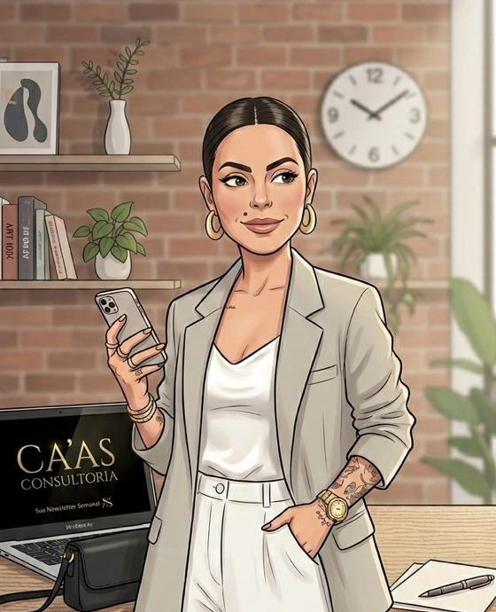

Eu entro como sua chefe de operações, sem salário de diretoria e sem encargo fixo. Organizo processos, estruturo times e preparo líderes para o negócio andar sem depender de você em cada decisão.

Crescer sem estrutura não é crescimento. É acúmulo de problemas que o sucesso ainda não mostrou.
Reconheceu dois ou três? O diagnóstico operacional mostra qual deles está custando mais caro agora.
HOaaS: a presença e a experiência de uma executiva sênior de operações, no ritmo que a sua empresa precisa, sem carteira assinada.
Não é consultoria de slide. Eu entro na operação e trabalho lado a lado com o seu time.
Você paga pela senioridade e pelo resultado, não por salário de diretor mais encargos.
O objetivo é a sua autonomia. Eu construo para a empresa andar sem mim.
Processo depende de time. Time depende de líder. Canal depende de operação. Eu trabalho no sistema, não no sintoma solto.
Mapeio, redesenho e documento quem faz o quê, do fluxo de trabalho à entrega.
Papéis claros, comunicação entre áreas e rituais de gestão que mantêm o time alinhado.
Parceiros, canais complementares e alianças, para não depender de uma única porta de entrada.
Leitura do cenário competitivo e definição de onde a empresa se posiciona.
Pertencimento que segura cliente e transforma comprador em quem defende a marca.
Um trabalho com entrega própria, não uma conversa de venda disfarçada.
Olho processo, time, canais e números por dentro.
Identifico o gargalo que trava o crescimento e o que ele custa.
Mapa do que precisa mudar, na ordem de prioridade.
Você sai sabendo onde está o gargalo, o que ele custa e por onde começar.
Fechando o projeto completo de estruturação, parte do valor do diagnóstico entra como desconto, combinado de acordo com o escopo.
Imersão, análise do gargalo e mapa de prioridades por escrito.
Escopo fechado de 30, 60 ou 90 dias: comercial, processos ou liderança. O plano fica com a empresa.
Sua head de operações alguns dias por semana, acompanhando a execução e os indicadores.
Método para primeira liderança e para um comercial previsível, menos dependente de poucos.
É resultado de estrutura, método e execução. O formato e o investimento a gente combina numa conversa rápida, sem compromisso.
Quero meu diagnósticoCarol Alves · Fundadora da Ca'as Consultoria · Vinhedo, SP